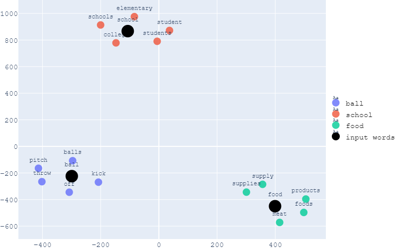
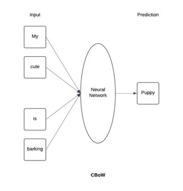
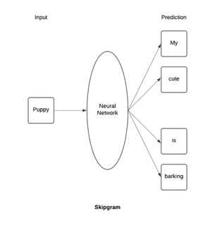
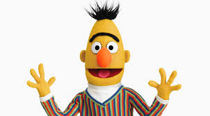
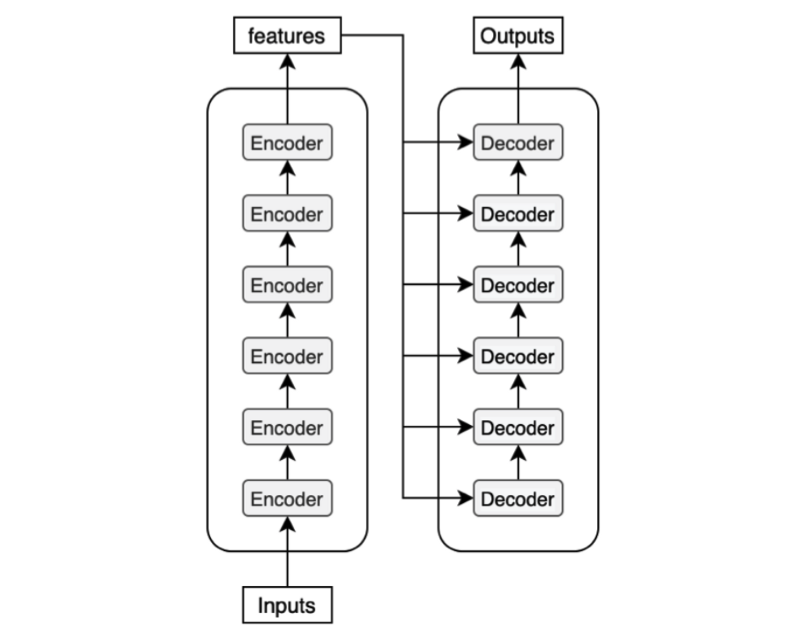

A Guide to Encoding Texts for Natural Language Processing
tutorial
Author
Adrian Leung
Published
January 17, 2025
Source: Google
Introduction
Natural Language Processing (NLP) is a fascinating field of Machine Learning that focuses on enabling machines to understand, interpret, and generate human language. From facilitating translation tools like Google Translate to powering voice assistance like Siri and Alexa, NLP’s influence on the current technological landscape is indisputable and substantial. With the ever-growing interest and expanding development in artificial intelligence, a lot of aspiring engineers and scientists are looking to venture into the lucrative NLP field. However, before we learn to perform all the fancy tasks such as text generation and summarization, we must start from the fundamentals and ask ourselves a question:
How can we bridge the gap between human communication and machine processing?
One problem that arises from this question is that computers do not understand language the way humans do. They are not wired to comprehend words and write essays like we do. Instead, they operate on numbers. All the NLP models are driven by mathematical algorithms and formulae. Thus, encoding text into numerical representations becomes the key to computers learning human language. By converting words, sentences, or entire documents into numbers, NLP models can perform a wide range of tasks like analyzing patterns, extracting meanings, and generating responses.
This blog will introduce and guide you through different methods and tools to encode texts, thus providing you with a gateway to performing NLP tasks.
Challenges of Textual Data
Before we learn about different ways to encode texts, we need to acknowledge the challenges associated with the intricacy of human language. Language is messy and unpredictable. Although there are sets of grammatical rules that govern a language, humans are prone to making mistakes yet still able to convey their messages. For example, “How is you doin” is grammatically incorrect but we know it means “How are you doing”. Thus, language is not strictly restricted by an algorithm, contrary to how computers operate.
Moreover, not all words have meanings. Auxiliary verbs like “is” and “am” do not contribute to or change the message a sentence wants to convey. They are meaningless outside of abiding by grammatical rules. There is also a hierarchy of meanings in a sentence. Certain words can mean more than others. Consider the sentence “We are happy”. Although “we” and “happy” play their roles in conveying our emotions, “happy” is a more important word as it tells the key emotion.
To complicate matters more, a word can have different meanings depending on the context. Even more confusingly, some words can have completely opposite meanings. For example, the word “left” in the sentence “We just left” means departed. However, it means staying when the sentence is “We are the only one left”. This shows that contexts can alter the meanings of the same word drastically.
Context matters!!! (Source: Kamala Harris)
Hence, making computers comprehend language like we do is far from a simple task. Encoding words with numerical representations is a work of art as it determines how well a model can understand us.
The sections below will cover different approaches to encoding texts including traditional methods like Bag-of-Words (BoW) and TF-IDF, word embeddings, and contextualized embeddings.
Traditional Methods
Bag-of-Words (BoW)
BoW is one of the most popular encoding methods. It encodes each unique word from all input documents with a number based on their count or presence in their respective document.
Consider the example below:
Unique words in all documents: [‘the’, ‘bird’, ‘is’, ‘cat’, ‘and’, ‘dog’, ‘hate’, ‘each’, ‘no’, ‘other’]
And we pick one of the documents for our first BoW representation as below.
Document: “The cat and the cat hate each other.”
In the case of encoding each word with its count, the BoW model will transform the document to the representation in Table 1. Since we have two ‘the’ and ‘cat’ in the document above, the numerical representations for ‘the’ and ‘cat’ in this document are 2.
the
bird
is
cat
and
dog
hate
each
no
other
2
0
0
2
1
0
1
1
0
1
Table 1: BoW representations using word counts
In the case of measuring each word by its presence as seen in Table 2, BoW uses binary values 0 and 1 to represent each word, where 0 implies absence and 1 implies presence. Note that the words ‘the’ and ‘cat’ are represented by 1 instead of 2 since we are using binary representations.
the
bird
is
cat
and
dog
hate
each
no
other
1
0
0
1
1
0
1
1
0
1
Table 2: BoW representations using binary indicators
To extract BoW representations in Python [1], we can leverage the CountVectorizer function from the scikit-learn package [2]. Table 3 demonstrates using CountVectorizer for BoW extraction by word count with the same example.
import pandas as pdfrom sklearn.feature_extraction.text import CountVectorizer# Using above exampledocuments = ['The cat and the cat hate each other.','The dog is the bird.','No, the bird and cat hate other dog.']bow = CountVectorizer()X = bow.fit_transform(documents)bow_df = pd.DataFrame( X.toarray(), columns=bow.get_feature_names_out(), index=documents)bow_df
and
bird
cat
dog
each
hate
is
no
other
the
The cat and the cat hate each other.
1
0
2
0
1
1
0
0
1
2
The dog is the bird.
0
1
0
1
0
0
1
0
0
2
No, the bird and cat hate other dog.
1
1
1
1
0
1
0
1
1
1
Table 3: BoW results from CountVectorizer
Although the BoW method is as intuitive and self-explanatory as it seems, it is far from a perfect model as it discards the word order in the original document. It disregards how words can form meaningful word phrases and change their meanings with respect to the context.
TF-IDF
TF-IDF, which stands for term frequency-inverse document frequency, is another popular method to encode text. It is a measure of the relevance of a word in a document. The computation can be broken down into two parts: term frequency and inverse document frequency.
Term Frequency (TF)
The term frequency is the count of a given word \(w\) in a given document \(d\), divided by the total number of words in document \(d\).
\[TF = \frac{\text{Number of word $w$ in document $d$}}{\text{Total number of words in document $d$}}\]
Inverse document frequency (IDF)
The inverse document frequency is to penalize words that are too common across all documents. For example, auxiliary verbs like ‘is’ are weighed less as a result. In return, this gives rise to rarer words that possibly carry more meaning and importance.
\[IDF = \log\left(\frac{\text{Total number of documents}}{\text{Number of documents containing word $w$}}\right)\]
Combining both TF and IDF
To have our TF-IDF representation, we multiply both terms to have the following formula:
\[TF\text{-}IDF = TF \times IDF\]
Now, let’s revisit our example with TF-IDF in Python. Luckily, the scikit-learn package [2] also has a function for TF-IDF called TfidfVectorizer. As shown in the first row in Table 4, the TF-IDF representation for ‘the’ is smaller than ‘cat’ even though they both have the same BoW representations in Table 3. This is the result of the compensation from IDF as ‘the’ is too common among existing documents.
import pandas as pdfrom sklearn.feature_extraction.text import TfidfVectorizer# Using the same exampledocuments = ['The cat and the cat hate each other.','The dog is the bird.','No, the bird and cat hate other dog.']tfidf = TfidfVectorizer()X = tfidf.fit_transform(documents)tfidf_df = pd.DataFrame( X.toarray(), columns=tfidf.get_feature_names_out().tolist(), index=documents)tfidf_df
and
bird
cat
dog
each
hate
is
no
other
the
The cat and the cat hate each other.
0.299594
0.000000
0.599187
0.000000
0.39393
0.299594
0.000000
0.000000
0.299594
0.465322
The dog is the bird.
0.000000
0.403525
0.000000
0.403525
0.00000
0.000000
0.530587
0.000000
0.000000
0.626747
No, the bird and cat hate other dog.
0.346438
0.346438
0.346438
0.346438
0.00000
0.346438
0.000000
0.455524
0.346438
0.269040
Table 4: TF-IDF results from TfidfVectorizer
TF-IDF is a step up from BoW as it recognizes what makes a word important in a document. However, similar to BoW, it also disregards the order and context of words. Thus, we need some alternatives that can compute an even better representation for words.
Word Embeddings
This is where word embeddings come into play. Contrary to traditional methods, word embeddings encode words in vector forms (from Linear Algebra!). Through vector representations, they can encapsulate the relationships between words by showing their similarity numerically. Mathematically, the similarity in words is measured by how close the embeddings are in the vector space. Figure 1 shows an example of visualizing word embeddings in a 2-dimensional space. As you can see, words that are similar in meaning or context are clustered together. This is the art of word embeddings!

Figure 1: Visualization of word embeddings (Source: Ruben Winastwan)
Word2Vec
One common tool to obtain word embeddings is Word2Vec [3]. It computes the embeddings by leveraging the architecture of two-layer neural networks. There are two approaches that Word2Vec uses to obtain these embeddings.
Continuous BoW (CBoW)
CBoW is a prediction algorithm where the neural network aims to predict a target word based on the existing context in a document. Simply put, this is analogous to filling in the blank in a sentence.
Consider the sentence “My cute puppy is barking”. The model will iterate over this sentence and remove one word from each iteration. For example, as shown in Figure 2, the model omits the word ‘puppy’ from the sentence and trains the neural network to guess the word ‘puppy’ from the remaining sentence.

Figure 2: Illustration of CBoW algorithm
Skipgram
Skipgram is the complete opposite of CBoW. Instead of predicting the missing word from a given context, skipgram predicts the surrounding context from a given word. Using the same example, as shown in Figure 3, the model will try to guess the surrounding words to the word ‘puppy’.

Figure 3: Illustration of Skipgram algorithm
After multiple iterations in the training process, Word2Vec will use the learned weights in the neural network from either of the approaches to construct the word embeddings for each word.
Applying Word2Vec in Python is made possible with the package Gensim[4]. As seen in Listing 1, Gensim‘s Word2Vec takes in a list of lists to generate the word embeddings. Note that the sg argument in the function lets you choose between CBoW and skipgram, where 0 and 1 correspond to CBoW and skipgram respectively. The argument min_count tells the model to ignore words that have a lower count than this minimum. After training Word2Vec on our sample text, we can take a quick look into what word embeddings look like for the word ’technology’ in Listing 1.
Listing 1: This code demonstrates extracting word embedding from the word ‘technology’
import pandas as pdfrom gensim.models import Word2Vec# Generated by ChatGPTsample_text = ["The advancement of technology has transformed the way we communicate and interact with the world.","Artificial intelligence is increasingly being used in healthcare, education, and other industries to enhance efficiency.","People often gather in coffee shops to discuss ideas, share stories, and enjoy a sense of community.","Self-driving cars and smart home devices are examples of how technology is becoming a part of our everyday lives.","Art galleries and cultural festivals are popular spots for people to explore creativity and connect with others.","The integration of AI in the workplace has sparked debates about its impact on jobs and productivity.","Reading books and attending literary events remain cherished activities in the digital age.","Many cities are blending technology with traditional practices to create unique and thriving environments.","The use of virtual reality in gaming and training has opened new possibilities for immersive experiences.","Social media platforms have changed the way we form relationships and share information globally."]# This generates a list of listssample_sentences = [sent.split() for sent in sample_text]w2v = Word2Vec(sample_sentences, min_count =1, sg =1)print(w2v.wv['technology'])
As it turns out, the word embedding for ‘technology’ is a high-dimensional vector. However, the values are much more ambiguous than the previous representations we have learned earlier. Let’s try to translate these embeddings into more comprehensible results.
As mentioned before, word embeddings are powerful at capturing similarities in words. We are putting this to the test in Listing 2, where we ask Word2Vec what the most similar word to ‘technology’ is. The result shows that ‘advancement’ is the closest word choice. This is a reasonable pick since we often use the phrase ‘technological advancement’ when describing new technological milestones.
Listing 2: This code shows what Word2Vec thinks the most similar word to ‘technology’ is.
print(w2v.wv.most_similar('technology')[0])
('advancement', 0.3503554165363312)
Word2Vec is a big improvement from traditional methods. Nevertheless, it still has flaws such as failing to recognize unknown words. Since Word2Vec is a pre-trained model, its linguistic knowledge is mainly based on the data corpus it was trained on. Unfortunately, language changes over time as new words continue to pop up in dictionaries every year. Thus, it is only a matter of time before Word2Vec becomes outdated. Another limitation of Word2Vec is its struggle to differentiate between words with multiple meanings. Since Word2Vec generates a word embedding for each unique word, it fails to acknowledge that a word can carry separate meanings. This can be problematic especially when words can have exact opposite meanings given different contexts.
Contextualized Embeddings
Similar to word embeddings, contextualized embeddings also encode texts into high-dimensional vectors. They refine the existing framework of word embeddings by conditioning each word on its context. When obtaining the contextualized embeddings of a word, it includes neighboring words in the calculation. As such, the same words that appear in different contexts will have different embeddings. This provides a solution to the limitations of word embeddings as it learns the word based on the context surrounding it.
While there are several architectures, such as ELMo and GPT-2, that are trained on obtaining contextualized embeddings, we will be focusing on learning the BERT model in this section.

Bert from Sesame Street. Coincidentally, the popular contextualized embeddings are conveniently named as Sesame Street characters (Source: Sesame Street)
BERT
BERT [5], which stands for Bidirectional encoder representations from transformers, is a transformer-based encoder model developed in 2018 by researchers at Google [6].
It is bidirectional in the sense that it captures both the left and right contexts of a given word. For example, consider the sentence “You exist in the context of all in which you live” and the target word “context”. The bidirectional nature of BERT ensures that both the left context, “You exist in the”, and the right context, “of all in which you live”, are taken into account.
Transformer [7], in this context, is a deep-learning architecture that revolutionalizes the field of NLP through its emphasis on contextualized representations. Its usage ranges from language translations to text generations. As shown in Figure 4, a transformer is powered by two separate mechanisms: an encoder system that reads an input text and produces a corresponding vector representation, and a decoder system that receives the vector representation and output sentences that are useful in tasks like text generation [8]. Despite BERT being a transformer-based model, it differs from a typical transformer as BERT only leverages the encoder mechanism of transformers since its goal is to create contextualized embeddings.

Figure 4: An oversimplified visualization of the encoder-decoder mechanism of a transformer. (Source: KiKaBeN)
To implement BERT in Python, we enlist the help of the Hugging Face library [9]. This implementation requires the packages transformers and torch. To install both packages, use the commands pip install transformers and pip install torch respectively.
Before producing BERT embeddings, we have to tokenize the input text with BertTokenizer in Listing 3. Tokenization is a process where we break down a text into smaller chunks, similar to extracting individual words from sentences. However, tokenization does not necessarily return a list of words as it aims to deconstruct texts in a way that facilitates the embedding computations. From the result of Listing 3, we see that BertTokenizer generates 33 tokens from the input text and the character or word each token represents.
Listing 3: This code shows how BERT tokenization works.
from transformers import BertTokenizer, BertModelimport torch# Load pre-trained BERT tokenizertokenizer = BertTokenizer.from_pretrained('bert-base-uncased')# Generated by ChatGPTtext ="Artificial intelligence is revolutionizing industries, making processes faster and more efficient. Despite its rapid advancements, human creativity and empathy remain irreplaceable."# Tokenize the input textinputs = tokenizer(text, return_tensors='pt', truncation=True, padding=True)tokens = inputs['input_ids'][0]# Tokenization resultsprint(f'Number of tokens generated: {tokens.shape[0]}')print(tokenizer.convert_ids_to_tokens(tokens.numpy()))
In Listing 4, we input the tokens into the pre-trained BertModel and return the BERT embedding for the token ‘artificial’. The resulting BERT embedding for ‘artificial’ is a 768-dimensional vector.
Listing 4: This code shows how we compute BERT embeddings.
# Load pre-trained BERT modelmodel = BertModel.from_pretrained('bert-base-uncased')# Get the embeddings from the BERT modelwith torch.no_grad(): outputs = model(**inputs)# Extract embeddingstoken_embeddings = outputs.last_hidden_state[0]# Token embeddings shape: (number of tokens in input, embedding dimension)print(f"Token: {tokenizer.convert_ids_to_tokens(tokens.numpy())[1]}")print(f"Embedding shape: {token_embeddings[1].shape}")print(f"First 10 values in the embedding: {token_embeddings[1][:10]}")
Token: artificial
Embedding shape: torch.Size([768])
First 10 values in the embedding: tensor([ 0.1357, 0.3550, -0.1805, 0.1837, 0.5278, 0.0016, 0.1048, 0.4054,
0.2871, -0.8610])
If you have followed the demonstration above, you might have noticed the significant time and size the pre-trained model takes when initially loaded. The heavy computational cost is a noticeable drawback of BERT. If you aim to train an NLP model on simple textual data while preserving efficiency, the previously introduced models will be a better choice to encode the data.
Conclusion
Encoding text into numbers is a foundational step in NLP. The choice of encoding method, whether it is simple approaches like Bag of Words or advanced contextual embeddings like BERT, significantly impacts the performance and outcomes of NLP tasks. Each method has its strengths and limitations. Thus, the selection process of text encoders is crucial to achieving the desired results.
The methods introduced in this blog are just the tip of the iceberg. As the field of NLP continues to evolve, discoveries and advancements in NLP are inevitable. Thus, I encourage you to experiment with different encoding techniques and enrich your NLP experience. Whether you are building a sentiment analysis tool, a recommendation system, or a machine translation model, exploring and adapting encoding strategies to suit your project’s unique requirements is key to success. By understanding the power of numerical representations, you can unlock the full potential of NLP and create solutions that bridge the gap between human language and machine understanding.
References
1.
Van Rossum G, Drake Jr FL (1995) Python reference manual. Centrum voor Wiskunde en Informatica Amsterdam
2.
Pedregosa F, Varoquaux G, Gramfort A, et al (2011) Scikit-learn: Machine learning in Python. Journal of Machine Learning Research 12:2825–2830
3.
Mikolov T (2013) Efficient estimation of word representations in vector space. arXiv preprint arXiv:13013781 3781
4.
Rehurek R, Sojka P (2011) Gensim–python framework for vector space modelling. NLP Centre, Faculty of Informatics, Masaryk University, Brno, Czech Republic 3(2)